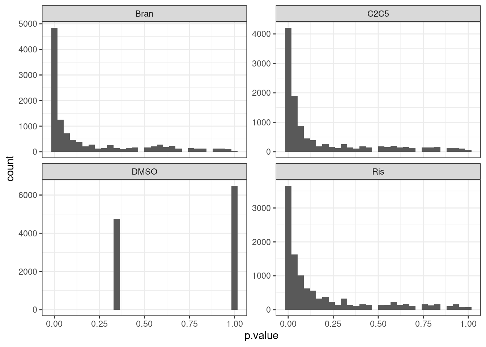
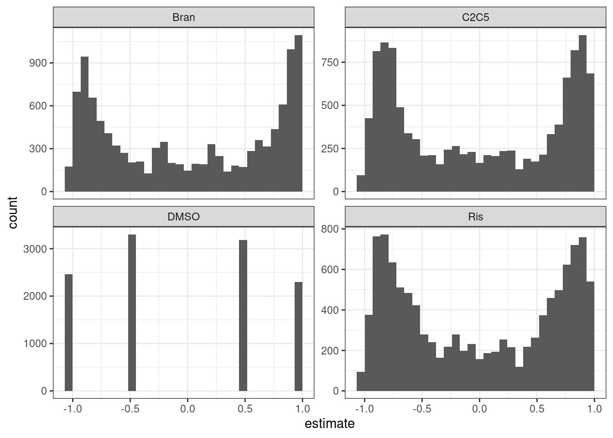
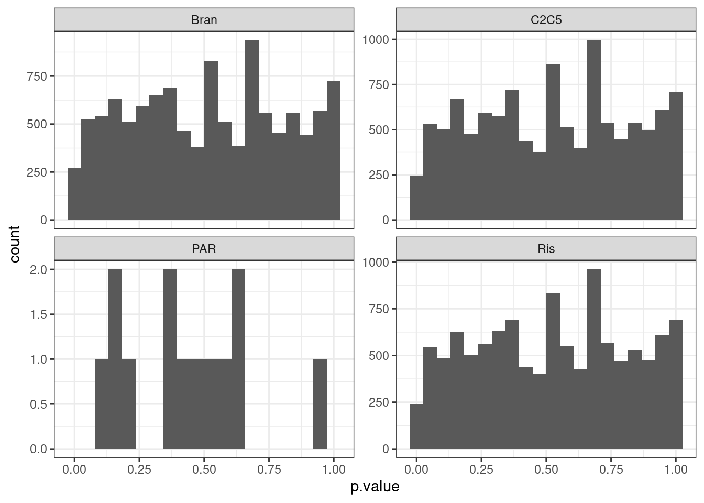
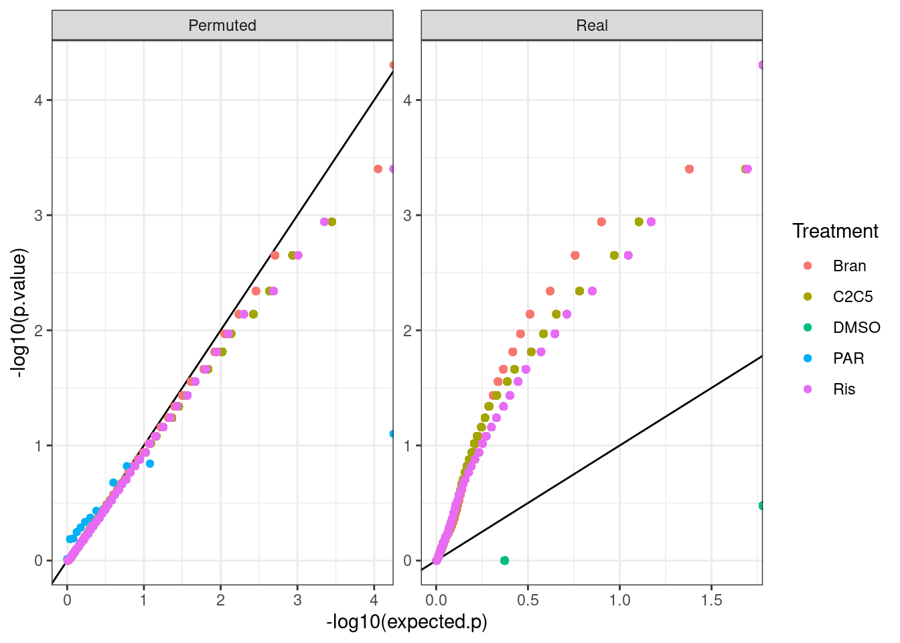
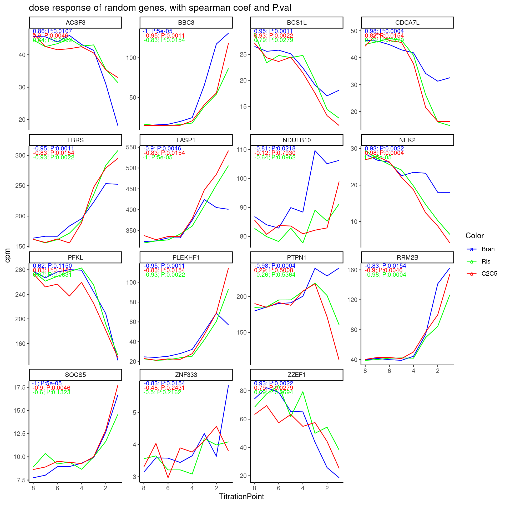
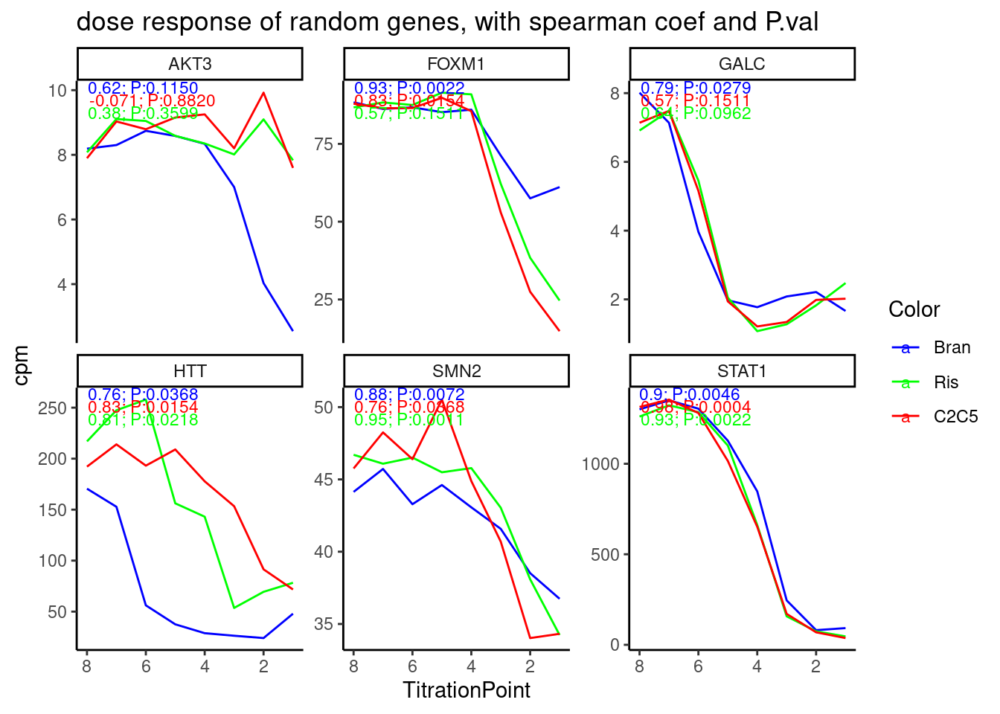
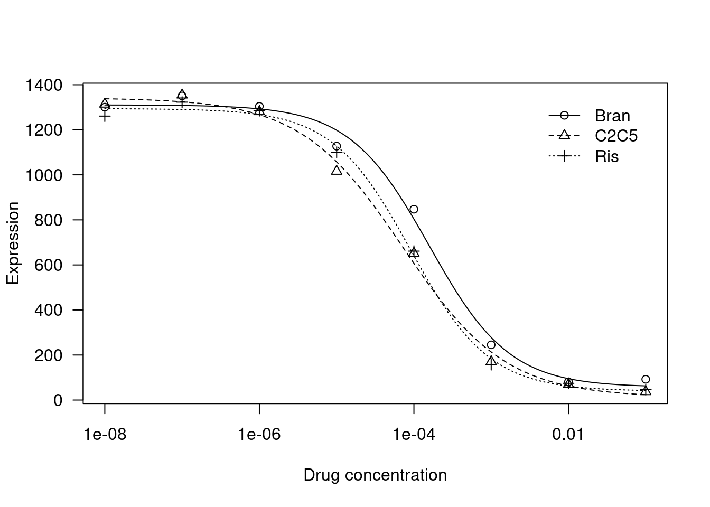
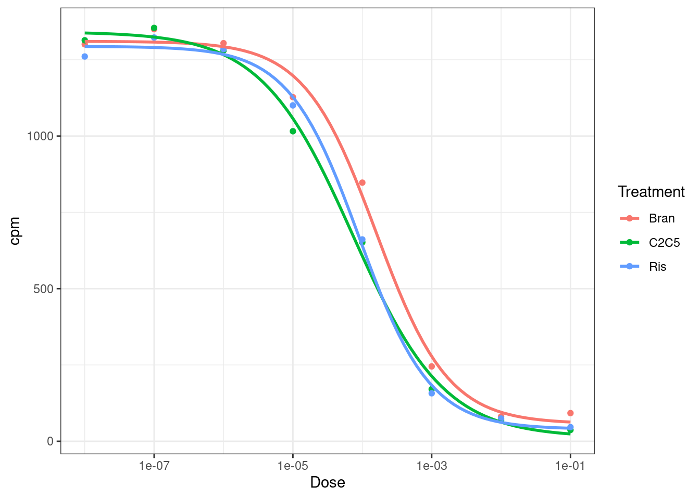
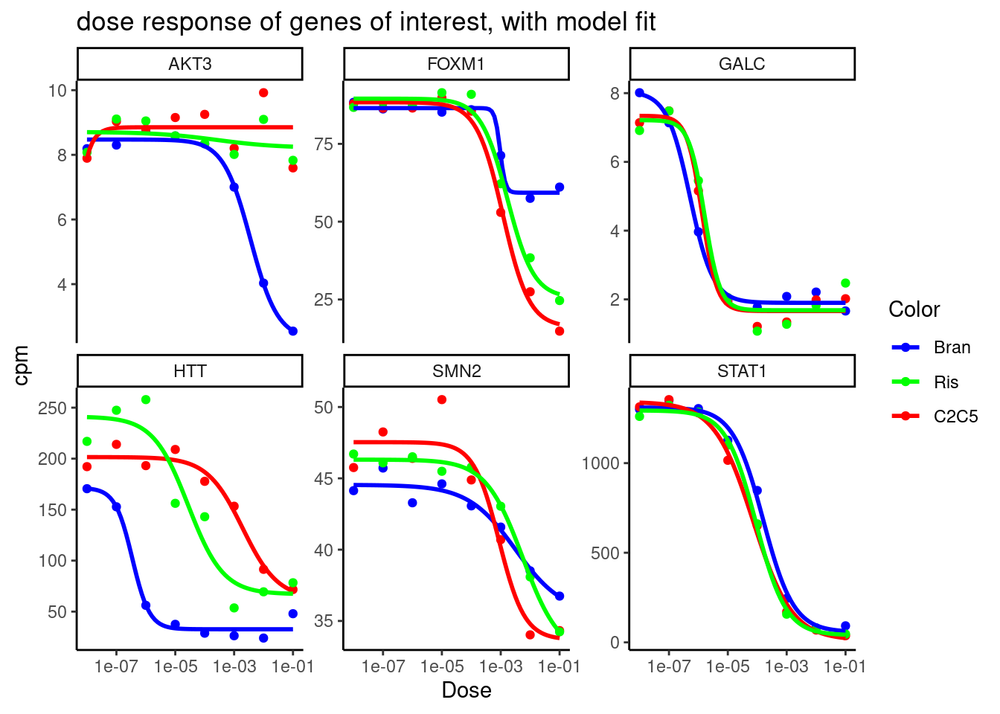
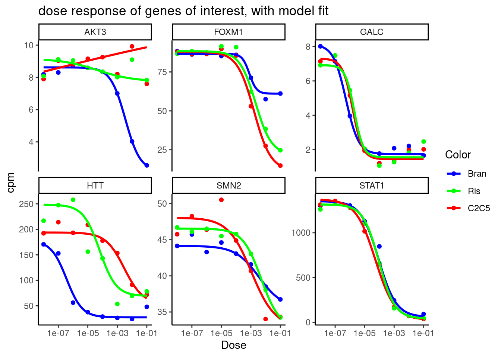

Last updated: 2022-07-11
Checks: 6 1
Knit directory: 20211209_JingxinRNAseq/analysis/
This reproducible R Markdown analysis was created with workflowr (version 1.6.2). The Checks tab describes the reproducibility checks that were applied when the results were created. The Past versions tab lists the development history.
The R Markdown is untracked by Git. To know which version of the R Markdown file created these results, you’ll want to first commit it to the Git repo. If you’re still working on the analysis, you can ignore this warning. When you’re finished, you can run wflow_publish to commit the R Markdown file and build the HTML.
Great job! The global environment was empty. Objects defined in the global environment can affect the analysis in your R Markdown file in unknown ways. For reproduciblity it’s best to always run the code in an empty environment.
The command set.seed(19900924) was run prior to running the code in the R Markdown file. Setting a seed ensures that any results that rely on randomness, e.g. subsampling or permutations, are reproducible.
Great job! Recording the operating system, R version, and package versions is critical for reproducibility.
Nice! There were no cached chunks for this analysis, so you can be confident that you successfully produced the results during this run.
Great job! Using relative paths to the files within your workflowr project makes it easier to run your code on other machines.
Great! You are using Git for version control. Tracking code development and connecting the code version to the results is critical for reproducibility.
The results in this page were generated with repository version e6f410c. See the Past versions tab to see a history of the changes made to the R Markdown and HTML files.
Note that you need to be careful to ensure that all relevant files for the analysis have been committed to Git prior to generating the results (you can use wflow_publish or wflow_git_commit). workflowr only checks the R Markdown file, but you know if there are other scripts or data files that it depends on. Below is the status of the Git repository when the results were generated:
Ignored files:
Ignored: .DS_Store
Ignored: .Rhistory
Ignored: .Rproj.user/
Ignored: ._.DS_Store
Ignored: analysis/20220707_TitrationSeries_DE_testing.nb.html
Ignored: code/.DS_Store
Ignored: code/._.DS_Store
Ignored: code/._DOCK7.pdf
Ignored: code/._DOCK7_DMSO1.pdf
Ignored: code/._DOCK7_SM2_1.pdf
Ignored: code/._FKTN_DMSO_1.pdf
Ignored: code/._FKTN_SM2_1.pdf
Ignored: code/._MAPT.pdf
Ignored: code/._PKD1_DMSO_1.pdf
Ignored: code/._PKD1_SM2_1.pdf
Ignored: code/.snakemake/
Ignored: code/5ssSeqs.tab
Ignored: code/Alignments/
Ignored: code/ChemCLIP/
Ignored: code/ClinVar/
Ignored: code/DE_testing/
Ignored: code/DE_tests.mat.counts.gz
Ignored: code/DE_tests.txt.gz
Ignored: code/Fastq/
Ignored: code/FastqFastp/
Ignored: code/Meme/
Ignored: code/OMIM/
Ignored: code/Session.vim
Ignored: code/SplicingAnalysis/
Ignored: code/featureCounts/
Ignored: code/log
Ignored: code/logs/
Ignored: code/scratch/
Ignored: data/._Hijikata_TableS1_41598_2017_8902_MOESM2_ESM.xls
Ignored: data/._Hijikata_TableS2_41598_2017_8902_MOESM3_ESM.xls
Ignored: output/._PioritizedIntronTargets.pdf
Untracked files:
Untracked: analysis/20220707_TitrationSeries_DE_testing.Rmd
Unstaged changes:
Modified: analysis/20220629_FirstGlanceTitrationSeries.Rmd
Modified: analysis/index.Rmd
Staged changes:
Modified: analysis/20211216_DifferentialSplicing.Rmd
New: analysis/20220629_FirstGlanceTitrationSeries.Rmd
Modified: analysis/index.Rmd
Modified: code/Snakefile
New: code/config/samples.titrationseries.tsv
New: code/rules/ProcessTitrationSeries.smk
New: code/rules/RNASeqProcessing.smk
Modified: code/rules/common.smk
New: code/rules/pangolin.smk
Note that any generated files, e.g. HTML, png, CSS, etc., are not included in this status report because it is ok for generated content to have uncommitted changes.
There are no past versions. Publish this analysis with wflow_publish() to start tracking its development.
See previous notebook entry about experiment design and first look analysis of titration series RNA-seq experiment with C2C5, branaplam, and risdiplam…
In that notebook, for sake of time, I focused on the set of genes identified as differentially expressed in a previous experiment using fibroblasts (3 replicates of DMSO, 3 replicates of each treatment, with different small molecule treatments)… Obviously this is un-ideal… Better would be to identify differentially expressed genes directly from this titration experiment in LCLs. But because we only have one replicate and many doses, the experiment design is a bit different than the models easiest to implement with standard tools for differential expression (edgeR/DESeq)… I think maybe an easier way to reasonably identify DE genes from this dataset would be just to use a spearman test, testing for a monotonic association between dose and gene expression. I will implement that here, and check the results, to get a sense of how many “DE” genes I discover this way, and check the dose response curves for a random set of those (controlled for FDR) to make sure they are reasonably believable since this is not your standard differential expression test (though I do think it makes sense for this experiment design)
let’s read in the data and start testing for differential expression.
library(tidyverse)
library(edgeR)
library(RColorBrewer)
library(gplots)
library(viridis)
library(broom)
library(qvalue)
library(drc)
sample_n_of <- function(data, size, ...) {
dots <- quos(...)
group_ids <- data %>%
group_by(!!! dots) %>%
group_indices()
sampled_groups <- sample(unique(group_ids), size)
data %>%
filter(group_ids %in% sampled_groups)
}
dat <- read_tsv("../code/featureCounts/Counts.titration_series.txt", comment="#") %>%
rename_at(vars(-(1:6)), ~str_replace(.x, "Alignments/STAR_Align/TitrationExp(.+?)/Aligned.sortedByCoord.out.bam", "\\1")) %>%
dplyr::select(Geneid, everything(), -c(2:6)) %>%
column_to_rownames("Geneid") %>%
DGEList()
ColorsTreatments <- c("blue"="Bran", "red"="C2C5", "green"="Ris")Before testing for differential expression, let’s filter for expressed genes. Here I’ll use a filter of average counts per million > 1.
mean.cpm <- dat %>%
cpm(log=T) %>%
apply(1, mean)
ExpressedGenes.CPM <- dat[mean.cpm>1,] %>%
calcNormFactors() %>%
cpm(prior.count=0.1)Now let’s perform spearman test, looking for monotonic association between dosage and expression.
test.results <- ExpressedGenes.CPM %>%
as.data.frame() %>%
rownames_to_column("gene") %>%
gather("sample", "cpm", -gene) %>%
separate(sample, into=c("Treatment", "TitrationPoint"), remove = F, convert = T) %>%
nest(-Treatment, -gene) %>%
mutate(cor=map(data,~cor.test(.x$TitrationPoint, .x$cpm, method = "sp"))) %>%
mutate(tidied = map(cor, tidy)) %>%
unnest(tidied, .drop = T)
test.results %>%
ggplot(aes(x=p.value)) +
geom_histogram() +
facet_wrap(~Treatment, scales="free_y") +
theme_bw()
test.results %>%
ggplot(aes(x=estimate)) +
geom_histogram() +
facet_wrap(~Treatment, scales="free_y") +
theme_bw()
The P value histograms actually look reasonable. And the effect sizes (correlation coefficients) are roughly symetrical about 0. Perhaps an alternative way to check that the test is reasonably calibrated is to permute the titration point labels…
mat <- ExpressedGenes.CPM %>%
as.data.frame() %>%
rownames_to_column("gene") %>%
gather("sample", "cpm", -gene) %>%
separate(sample, into=c("Treatment", "TitrationPoint"), convert = T) %>%
filter(!Treatment=="DMSO") %>%
unite(Rowname, gene, Treatment) %>%
pivot_wider(names_from = "TitrationPoint", values_from="cpm", id_cols="Rowname") %>%
column_to_rownames("Rowname") %>%
as.matrix()
mat.permuted <- matrix(nrow=nrow(mat), ncol=ncol(mat))
for (i in 1:nrow(mat)){
mat.permuted[i,] <- sample(mat[i,], size=ncol(mat))
}
rownames(mat.permuted) <- rownames(mat)
test.results.permuted <- mat.permuted %>%
as.data.frame() %>%
rownames_to_column("rowname") %>%
separate(rowname, into=c("gene", "Treatment"), sep="_") %>%
gather("TitrationPoint", "cpm", -gene, -Treatment) %>%
mutate(TitrationPoint = as.numeric(str_remove(TitrationPoint, "V"))) %>%
nest(-Treatment, -gene) %>%
mutate(cor=map(data,~cor.test(.x$TitrationPoint, .x$cpm, method = "sp"))) %>%
mutate(tidied = map(cor, tidy)) %>%
unnest(tidied, .drop = T)
test.results.permuted %>%
ggplot(aes(x=p.value)) +
geom_histogram(bins=20) +
facet_wrap(~Treatment, scales="free_y") +
theme_bw()
Perhaps qq plots are a better way to visualize, since with only 8 titraion points i think there are a limited number of test result p values that makes histogram binning kind of weird.
bind_rows(test.results, test.results.permuted, .id="PermutedOrNot") %>%
mutate(PermutedOrNot= recode(PermutedOrNot, !!!c('1'="Real", '2'="Permuted"))) %>%
group_by(Treatment, PermutedOrNot) %>%
mutate(expected.p = percent_rank(p.value)) %>%
ggplot(aes(x=-log10(expected.p), y=-log10(p.value), color=Treatment)) +
geom_abline() +
geom_point() +
facet_wrap(~PermutedOrNot, scales="free") +
theme_bw()
I feel the test is decently calibrated at least based on permutations of dose, even though most genes are significant. One reason it may not be perfectly calibrated is when dealing with tie values from CPM values from pseudocounts. In any case, Let’s estimate FDR.
test.results <-
test.results %>%
filter(!Treatment=="DMSO") %>%
group_by(Treatment) %>%
mutate(q = qvalue(p.value)$qvalues) %>%
ungroup()
test.results %>%
filter(q < 0.1) %>%
distinct(gene) %>% nrow()[1] 10710Pretty much every gene is DE. Well, let’s just check out some dose-response genes for random genes then…
#Read in gene names so that we can plot with gene symbol instead of ensembl idea
geneNames <- read_tsv("../data/Genes.list.txt") %>%
mutate(hgnc_symbol = coalesce(hgnc_symbol,ensembl_gene_id)) %>%
inner_join(data.frame(ensembl.full=rownames(ExpressedGenes.CPM)) %>%
mutate(ensembl_gene_id = str_remove(ensembl.full, "\\..+$")),
by = "ensembl_gene_id"
) %>%
dplyr::select(ensembl.full, hgnc_symbol)
set.seed(0)
ExpressedGenes.CPM %>%
as.data.frame() %>%
rownames_to_column("gene") %>%
# filter(gene %in% Genes.to.plot$gene) %>%
gather("sample", "cpm", -gene) %>%
sample_n_of(15, gene) %>%
separate(sample, into=c("Treatment", "TitrationPoint"), remove = F, convert = T) %>%
dplyr::select(-sample) %>%
inner_join(test.results, by=c("gene", "Treatment")) %>%
mutate(Color = case_when(
Treatment == "Bran" ~ "blue",
Treatment == "C2C5" ~ "red",
Treatment == "Ris" ~ "green")) %>%
mutate(gene = recode(gene, !!!deframe(geneNames))) %>%
mutate(FacetLabel = paste(gene)) %>%
ggplot(aes(x=TitrationPoint, y=cpm, color=Color)) +
geom_line() +
geom_text(data = (
. %>%
distinct(Treatment, FacetLabel, .keep_all = T) %>%
group_by(FacetLabel) %>%
mutate(vjust = 1 * row_number()) %>%
ungroup()),
aes(label = paste0(signif(estimate,2), "; P:",format.pval(p.value, digits=2)), vjust=vjust),
x=-Inf, y=Inf, size=3, hjust=-0.1
) +
scale_color_identity(labels=ColorsTreatments, guide="legend") +
scale_x_reverse() +
facet_wrap(~FacetLabel, scales = "free_y") +
labs(title = "dose response of random genes, with spearman coef and P.val") +
theme_classic()
Hmm, I think the test results are actually reasonable… Keep in mind that the correlation coefficient is between dose and CPM, and highest dose is labelled as “1”, so a negative correlation coefficient means it expression goes up with dose. It does seem the majority of genes have obvious dose-response effects, as the test results indicate.
Let’s see if there is an obvious bias in effect directions.
Let’s again look at these plots with the P values for some select genes of interest…
GenesOfInterest <- c("MAPT", "SNCA", "SMN2", "HTT", "GALC", "FOXM1", "STAT1", "AKT3", "PDGFRB")
ExpressedGenes.CPM %>%
as.data.frame() %>%
rownames_to_column("gene") %>%
gather("sample", "cpm", -gene) %>%
separate(sample, into=c("Treatment", "TitrationPoint"), remove = F, convert = T) %>%
dplyr::select(-sample) %>%
inner_join(test.results, by=c("gene", "Treatment")) %>%
mutate(Color = case_when(
Treatment == "Bran" ~ "blue",
Treatment == "C2C5" ~ "red",
Treatment == "Ris" ~ "green")) %>%
inner_join(geneNames, by=c("gene"="ensembl.full")) %>%
mutate(gene = hgnc_symbol) %>%
filter(gene %in% GenesOfInterest) %>%
mutate(FacetLabel = paste(gene)) %>%
ggplot(aes(x=TitrationPoint, y=cpm, color=Color)) +
geom_line() +
geom_text(data = (
. %>%
distinct(Treatment, FacetLabel, .keep_all = T) %>%
group_by(FacetLabel) %>%
mutate(vjust = 1 * row_number()) %>%
ungroup()),
aes(label = paste0(signif(estimate,2), "; P:",format.pval(p.value, digits=2)), vjust=vjust),
x=-Inf, y=Inf, size=3, hjust=-0.1
) +
scale_color_identity(labels=ColorsTreatments, guide="legend") +
scale_x_reverse() +
facet_wrap(~FacetLabel, scales = "free_y") +
labs(title = "dose response of random genes, with spearman coef and P.val") +
theme_classic()
Cool. again, the spearman correlation test results with p values make sense. Maybe I should also try a simple linear model to test for non-zero slope, since the spearman test doesn’t really take into account that some big changes between titration points are more believable.
For the future I think I will want to first perform some sort of test like this to filter for genes for which to attempt fitting logistic curves, then compare the EC50 between treatments.
Maybe I should also do the same approach for splicing test… That is, quantify splicing ratios from leafcutter clustering script, then perform calculate spearman correlation coefficient and p value over dose-response series. It might be a good idea to first filter for reasonably expressed junctions first… Perhaps I should just also run the leafcutter prepare_phenotype_table script for filtering out lowly expressed junctions or ones that don’t vary, and then perform the spearman test on those set of junctions. This pre-processing (which includes z-score and qq-normalization) might also have the small advantage of eliminating identical values, which sort of breaks the spearman test.
First let’s try fitting a model to dose-response data with drc::drm
For now let’s just focus on STAT1 gene, fit with standard 4-parameter logistic model from drc::drm, and plot the results and look at coefficients to make sure they make sense
data <-
ExpressedGenes.CPM %>%
as.data.frame() %>%
rownames_to_column("gene") %>%
inner_join(geneNames, by=c("gene"="ensembl.full")) %>%
filter(hgnc_symbol == "STAT1") %>%
gather("sample", "cpm", -gene, -hgnc_symbol) %>%
separate(sample, into=c("Treatment", "TitrationPoint"), remove = F, convert = T) %>%
# filter(Treatment == "Bran") %>%
mutate(Dose = 10**(-1*TitrationPoint)) %>%
filter(!Treatment=="DMSO")
fitted_curve <- drm(formula = cpm ~ Dose,
data = data,
fct = LL.4(names=c("Steepness", "LowerLimit", "UpperLimit", "ED50")),
curveid=Treatment)
plot(fitted_curve,
log='x',
xlab = 'Drug concentration',
ylab= 'Expression')
fitted_curve$coefficients Steepness:Bran Steepness:C2C5 Steepness:Ris LowerLimit:Bran LowerLimit:C2C5
8.381582e-01 6.577965e-01 8.519516e-01 5.737624e+01 1.260255e+01
LowerLimit:Ris UpperLimit:Bran UpperLimit:C2C5 UpperLimit:Ris ED50:Bran
3.958516e+01 1.310430e+03 1.341513e+03 1.293949e+03 1.586313e-04
ED50:C2C5 ED50:Ris
7.246363e-05 9.071778e-05 Let’s also try plotting data with ggplot2
ggplot(data, aes(x=Dose, y=cpm, color=Treatment)) +
geom_point() +
scale_x_continuous(trans="log10") +
geom_smooth(aes(group=Treatment), method = drm, method.args = list(fct = L.4(names=c("Steepness", "LowerLimit", "UpperLimit", "ED50"))), se = FALSE) +
theme_bw()
Neat, let’s try fitting the model to more genes, just to get an intuition about how the model fits look for genes with not as perfect data…
ExpressedGenes.CPM %>%
as.data.frame() %>%
rownames_to_column("gene") %>%
gather("sample", "cpm", -gene) %>%
separate(sample, into=c("Treatment", "TitrationPoint"), remove = F, convert = T) %>%
dplyr::select(-sample) %>%
inner_join(test.results, by=c("gene", "Treatment")) %>%
mutate(Color = case_when(
Treatment == "Bran" ~ "blue",
Treatment == "C2C5" ~ "red",
Treatment == "Ris" ~ "green")) %>%
inner_join(geneNames, by=c("gene"="ensembl.full")) %>%
mutate(gene = hgnc_symbol) %>%
filter(gene %in% GenesOfInterest) %>%
mutate(FacetLabel = paste(gene)) %>%
mutate(Dose = 10**(-1*TitrationPoint)) %>%
filter(!Treatment=="DMSO") %>%
ggplot(aes(x=Dose, y=cpm, color=Color)) +
geom_point() +
scale_x_continuous(trans="log10") +
geom_smooth(aes(group=Treatment), method = drm, method.args = list(fct = L.4(names=c("Steepness", "LowerLimit", "UpperLimit", "ED50"))), se = FALSE) +
scale_color_identity(labels=ColorsTreatments, guide="legend") +
facet_wrap(~FacetLabel, scales = "free_y") +
labs(title = "dose response of genes of interest, with model fit") +
theme_classic()
Ok neat, the model fits look reasonable…
I notice the drc::drm function has parameters for robust estimation. Let’s see how that differs.
ExpressedGenes.CPM %>%
as.data.frame() %>%
rownames_to_column("gene") %>%
gather("sample", "cpm", -gene) %>%
separate(sample, into=c("Treatment", "TitrationPoint"), remove = F, convert = T) %>%
dplyr::select(-sample) %>%
inner_join(test.results, by=c("gene", "Treatment")) %>%
mutate(Color = case_when(
Treatment == "Bran" ~ "blue",
Treatment == "C2C5" ~ "red",
Treatment == "Ris" ~ "green")) %>%
inner_join(geneNames, by=c("gene"="ensembl.full")) %>%
mutate(gene = hgnc_symbol) %>%
filter(gene %in% GenesOfInterest) %>%
mutate(FacetLabel = paste(gene)) %>%
mutate(Dose = 10**(-1*TitrationPoint)) %>%
filter(!Treatment=="DMSO") %>%
ggplot(aes(x=Dose, y=cpm, color=Color)) +
geom_point() +
scale_x_continuous(trans="log10") +
geom_smooth(aes(group=Treatment), method = drm, method.args = list(fct = L.4(names=c("Steepness", "LowerLimit", "UpperLimit", "ED50")), robust="median"), se = FALSE) +
scale_color_identity(labels=ColorsTreatments, guide="legend") +
facet_wrap(~FacetLabel, scales = "free_y") +
labs(title = "dose response of genes of interest, with model fit") +
theme_classic()
Ok, so for some genes with more questionable dose-response curves (eg AKT3), it certainly makes a difference in the visual shape of the curve, and the parameter estimates might be wildly different.
I’ll have to extract parameter estimates and their standard errors in order to more carefully compare treatment effects…
I also notice there there type parameter can specify different data types, so for example for low-count data (eg splicing) we can try specifying type="Poisson". I will have to read the documentation to make sure I understand how this works. And even if it is as simple as I think to specify type="Poisson", I would then we have to think about offsets for parameters based on library size or total read counts in clusters. That might be more trouble than it is worth trying to implement. There is also an option to specify limits for parameters, or keep certain parameters fixed. For example, I could fix the LowerLimit parameter to be the mean expression among DMSO replicates.
sessionInfo()R version 3.6.1 (2019-07-05)
Platform: x86_64-pc-linux-gnu (64-bit)
Running under: Scientific Linux 7.4 (Nitrogen)
Matrix products: default
BLAS/LAPACK: /software/openblas-0.2.19-el7-x86_64/lib/libopenblas_haswellp-r0.2.19.so
locale:
[1] LC_CTYPE=en_US.UTF-8 LC_NUMERIC=C
[3] LC_TIME=en_US.UTF-8 LC_COLLATE=en_US.UTF-8
[5] LC_MONETARY=en_US.UTF-8 LC_MESSAGES=en_US.UTF-8
[7] LC_PAPER=en_US.UTF-8 LC_NAME=C
[9] LC_ADDRESS=C LC_TELEPHONE=C
[11] LC_MEASUREMENT=en_US.UTF-8 LC_IDENTIFICATION=C
attached base packages:
[1] stats graphics grDevices utils datasets methods base
other attached packages:
[1] drc_3.0-1 MASS_7.3-51.4 qvalue_2.16.0 broom_1.0.0
[5] viridis_0.5.1 viridisLite_0.3.0 gplots_3.0.1.1 RColorBrewer_1.1-2
[9] edgeR_3.26.5 limma_3.40.6 forcats_0.4.0 stringr_1.4.0
[13] dplyr_1.0.9 purrr_0.3.4 readr_1.3.1 tidyr_1.2.0
[17] tibble_3.1.7 ggplot2_3.3.6 tidyverse_1.3.0
loaded via a namespace (and not attached):
[1] nlme_3.1-140 bitops_1.0-6 fs_1.3.1 lubridate_1.7.4
[5] httr_1.4.1 rprojroot_2.0.2 tools_3.6.1 backports_1.4.1
[9] utf8_1.1.4 R6_2.4.0 KernSmooth_2.23-15 mgcv_1.8-40
[13] DBI_1.1.0 colorspace_1.4-1 withr_2.4.1 tidyselect_1.1.2
[17] gridExtra_2.3 curl_3.3 compiler_3.6.1 git2r_0.26.1
[21] cli_3.3.0 rvest_0.3.5 xml2_1.3.2 sandwich_3.0-2
[25] labeling_0.3 caTools_1.17.1.2 scales_1.1.0 mvtnorm_1.1-3
[29] digest_0.6.20 foreign_0.8-71 rmarkdown_1.13 rio_0.5.16
[33] pkgconfig_2.0.2 htmltools_0.3.6 plotrix_3.8-2 highr_0.9
[37] dbplyr_1.4.2 rlang_1.0.3 readxl_1.3.1 rstudioapi_0.10
[41] farver_2.1.0 generics_0.1.3 zoo_1.8-10 jsonlite_1.6
[45] gtools_3.9.2.2 zip_2.0.3 car_3.0-5 magrittr_1.5
[49] Matrix_1.2-18 Rcpp_1.0.5 munsell_0.5.0 fansi_0.4.0
[53] abind_1.4-5 lifecycle_1.0.1 multcomp_1.4-19 stringi_1.4.3
[57] yaml_2.2.0 carData_3.0-5 plyr_1.8.4 grid_3.6.1
[61] gdata_2.18.0 promises_1.0.1 crayon_1.3.4 lattice_0.20-38
[65] haven_2.3.1 splines_3.6.1 hms_0.5.3 locfit_1.5-9.1
[69] knitr_1.39 pillar_1.7.0 codetools_0.2-18 reshape2_1.4.3
[73] reprex_0.3.0 glue_1.6.2 evaluate_0.15 data.table_1.14.2
[77] modelr_0.1.8 vctrs_0.4.1 httpuv_1.5.1 cellranger_1.1.0
[81] gtable_0.3.0 assertthat_0.2.1 xfun_0.31 openxlsx_4.1.0.1
[85] later_0.8.0 survival_2.44-1.1 workflowr_1.6.2 TH.data_1.1-1
[89] ellipsis_0.3.2